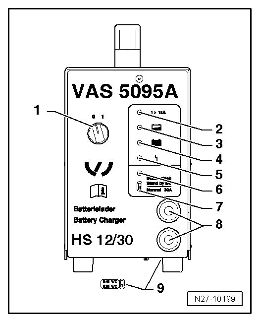

Battery Charger 5095A
Battery Charger 5095A
The Battery Charger (VAS 5095) is designed to charge all 12V batteries in the VW group.
The battery is charged without amperage or voltage surges. Thereby the on-board electronics will not be affected. The battery does not need to be removed from the vehicle or be disconnected from the electrical system during charging.
Battery Charger VAS 5903 (VAS 5095 A)

1 Switch ON/OFF (0 = Charger OFF)
2 Charger current indicator (I > 12 A)
3 Charger current indicator, battery partially charged > 90 %
4 Charger sustain, lights up green when battery is charged
5 Interference indicator
6 Support mode indicator
7 Support mode/normal mode selector switch
8 Charger cables, red charging clamp " +", black charging clamp "-".
9 Battery type selector switch (base of loading devices)